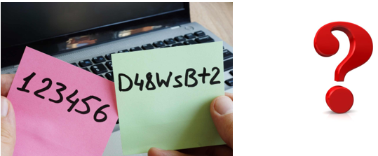
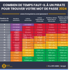
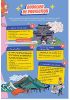
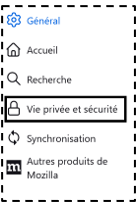
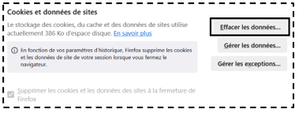
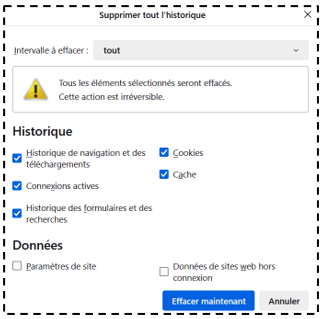

Séance 2 (correction) : Se protéger et protéger ses données
Séance 2: Se protéger et protéger ses données
Situation déclenchante
Mathieu a un reçu un mot de passe provisoire pour son compte pronote.
Il cherche un bon mot de passe, mais il ne sait pas comment s’y prendre. Il ne veut pas mettre un mot de passe trop facile et il a peur d’oublier un mot de passe trop compliqué.

Mes constats, mes observations :
Un élève doit créer un mot de passe
Mon problème à résoudre :
« Comment choisir un bon mot de passe ? »
Mes idées pour le résoudre :
Il faut qu’il soit facile à retenir mais pas trop simple à deviner. (combinaison de lettre(majuscules, minuscules), chiffres, caractères spéciaux)
Activité 1 **(**niveau 1 et 2 ) : Définir et identifier des données personnelles en informatique
N1. Qu’est-ce qu’une donnée personnelle en informatique ?
C’est une information concernant une personne, comme son nom, son adresse,...
N2. Quelles sont les données personnelles disponibles sur ton compte Pronote ?
Le nom, prénom, emploi du temps, les notes, les compétences, les bulletins, l’INE,...
Ressources: Protection des données personnelles.png
Activité 2 (niveau 3) : sécuriser mes données personnelles par des mots de passe forts
N3.1 Combien de temps mettrait un fraudeur à trouver un mot de passe de 8 caractères s’il comporte que des chiffres?
37 secondes
N3.2 Quelle est la couleur qui correspond à un mot de passe très fort ?
La couleur verte
N3.4 Proposer des conditions requises pour créer un mot de passe fort qui va
prendre du temps à être déchiffré sans qu'il soit trop long à écrire ?
Il faut une combinaison de lettres minuscules, majuscules, caractères spéciaux et
chiffres avec au moins 13 caractères.
N3.5 Quelles sont les méthodes pour créer un mot de passe facile à retenir mais
difficile à deviner pour les autres ?
On peut utiliser plusieurs méthodes : la première d’une phrase que vous connaissez
par cœur.
Mélanger des mots français et étrangers : 1goodmotdepasse!
Un mot où on intercale plusieurs caractères spéciaux : F+r+a+n+c+e2025
Un mot où on intercale toujours les mêmes chiffres : F8r8a8n8c8e8!
N3.6 Quand est-il conseillé d’utiliser des pseudonymes sur internet ?
Quand on utilise les réseaux sociaux, il est conseillé d’utiliser un pseudo pour être suivi
uniquement par les personnes que tu connais.
Ressources: Bouclier de protection.pdf

Ressources: temps mdp.jpg

Activité 3 (niveau 4): Effacer les cookies et les traces de navigation
Il faut effacer les traces de navigation.
Pour cela :
● Cliquer sur du navigateur Mozilla Firefox.
● Cliquer sur “Paramètres”. (On peut cliquer sur “Outils” puis “Paramètres” dans la barre de menus). Une nouvelle fenêtre s’ouvre.
● Cliquer sur “Vie privée et sécurité”

● Descendre avec la souris jusqu'à trouver “Cookies et données de sites”.
● Cliquer alors sur “Effacer les données” puis “Effacer”.

● Une fois la procédure validée, continuer de descendre jusqu’à trouver “Historique”. Cliquer sur “Effacer l’historique”.
● S’assurer que tout soit coché et cliquer sur “Effacer maintenant”.

Existe-t-il une procédure plus rapide avec les touches de raccourci ?
« Ctrl + Shift + Delete » ou « Ctrl + Maj + Suppr »
Ma Synthèse
Une donnée personnelle est une information concernant une personne, comme son nom, son adresse,...
Pour protéger ses données personnelles, il faut connaître les règles pour protéger ses données : créer des mots de passe fort, utiliser des pseudos sur les réseaux.
Il faut savoir effacer ses traces numériques.
Ressources: Protection des données personnelles.png